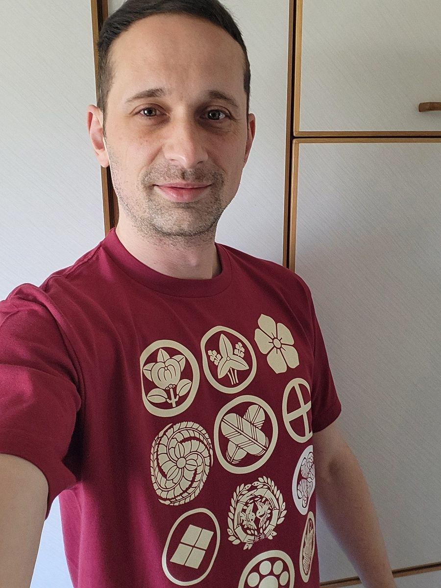

Psycholinguistics · Saarland University
Torsten Kai Jachmann
I study how people build expectations while they understand language – from a speaker’s glance at an object to the order in which words arrive and what is already known in the conversation.

Latest work · HSP 2026, MIT
Word order and givenness in German and Korean
Two self-paced reading studies test an expected-first account: readers slow down when the first noun phrase departs from what discourse and grammar lead them to expect. German shows a graded pattern (given < implied < new); in Korean, implied referents pattern with new ones and word-order costs appear later.

Research
Three lines of work
Speaker gaze and prediction
How listeners use where a speaker looks to anticipate what comes next – measured with ERPs.
02Word order and information structure
How givenness and constituent order jointly shape reading in German and Korean.
03Collaborations and earlier work
Discourse expectations, word learning, turn-taking and English–Japanese machine translation.
Selected publications
Journal articles
- 2023
When a look is enough: Neurophysiological correlates of referential speaker gaze in situated comprehension
Cognition, 236, 105449
- 2022
Age-related differences in expectation-based novel word learning
Psychophysiology, e14030
- 2019
Influence of speakers’ gaze on situated language comprehension: Evidence from Event-Related Potentials
Brain and Cognition